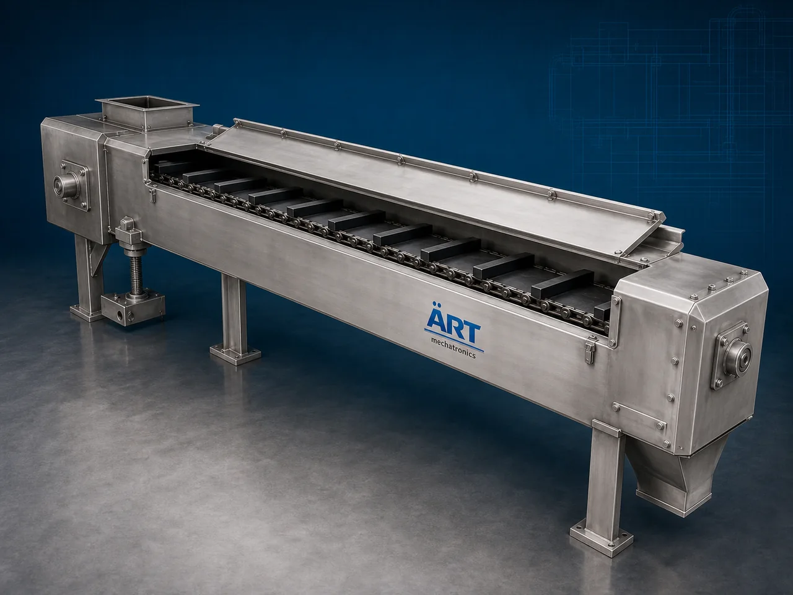

Drag Chain Conveyor Machine (Industrial Enclosed Bulk Material Handling System)
A Drag Chain Conveyor Machine, also known as a Drag Conveyor, En Masse Conveyor, or Industrial Drag Chain Conveyor System, is a heavy-duty industrial material handling equipment designed for continuous enclosed transportation of powders, granules, grains, pellets, ash, cement, chemicals, biomass,…

About the Drag Chain Conveyor
Drag chain conveyor systems are widely used for: ✔ Enclosed bulk material conveying ✔ Dust-free material transfer ✔ Heavy-duty industrial handling ✔ Horizontal and inclined conveying ✔ Long-distance material transportation ✔ Controlled product flow systems
The machine improves: ✔ Material handling efficiency ✔ Dust control and cleanliness ✔ Production automation ✔ Product safety ✔ Factory hygiene ✔ Continuous industrial operation
Unlike conventional conveyors, drag chain conveyors use: ✔ Chain-driven flights or paddles ✔ Enclosed conveyor casing ✔ Heavy-duty drag chain systems ✔ Slow-speed bulk material movement
to transport materials smoothly while minimizing product damage and dust generation.
Drag chain conveyor machines are widely used in industries such as:
Cement industries
Grain processing plants
Food processing industries
Chemical industries
Power plants
Biomass industries
Fertilizer industries
Mining industries
where dust-free enclosed bulk material conveying is essential.
The machine is highly suitable for: ✔ Grain conveying ✔ Powder handling ✔ Fly ash transfer ✔ Cement transportation ✔ Biomass conveying ✔ Bulk material movement
ART Mechatronics offers high-performance drag chain conveyor machines, engineered for continuous industrial operation, enclosed dust-free conveying, rugged construction, and reliable long-term performance.
Working Principle of Drag Chain Conveyor Machine
Powders, grains, pellets, ash, or bulk materials are fed into conveyor inlet section
Motor-driven chain system moves flights or paddles inside enclosed conveyor casing
Flights drag material continuously along conveyor path
Machine conveys: ✔ Powders ✔ Grains ✔ Pellets ✔ Cement ✔ Fly ash ✔ Biomass ✔ Chemicals without dust leakage or material spillage.
Controlled chain movement reduces: Product degradation Dust generation Material segregation
Conveyor can operate: Horizontally Inclined Multi-directional arrangements depending on plant layout.
Material discharged continuously at desired process or transfer point
Types of Drag Chain Conveyor Machines
- 1. En Masse Drag Conveyor
Uses: ✔ Bulk mass material movement system for high-capacity conveying applications.
- 2. Flight Type Drag Conveyor
Uses: ✔ Flights or paddles mounted on chain for controlled material transfer.
- 3. Horizontal Drag Chain Conveyor
Suitable for: ✔ Long-distance horizontal bulk conveying systems
- 4. Inclined Drag Conveyor
Designed for: ✔ Elevated bulk material transportation systems
- 5. Food Grade Drag Conveyor
Suitable for: ✔ Hygienic food and grain handling applications
- 6. Heavy Duty Industrial Drag Conveyor
Designed for: ✔ Cement, power, and mining industries
Industries Using Drag Chain Conveyor Machine
🌾 Grain Processing Industry Grain and seed conveying systems 🏗️ Cement Industry Cement and clinker transfer systems ⚗️ Chemical Industry Powder and granule handling systems ⚡ Power Plant Industry Fly ash and coal handling systems 🍃 Food Processing Industry Hygienic bulk material transfer systems 🌱 Biomass Industry Biomass and organic material conveying systems 🌱 Fertilizer Industry Fertilizer granule transportation systems ⛏️ Mining Industry Bulk ore and mineral conveying systems
Features & Advantages
✔ Fully enclosed dust-free conveying system ✔ Suitable for powders and bulk materials ✔ Gentle material handling with low product degradation ✔ Continuous industrial operation ✔ Heavy-duty industrial construction ✔ High-capacity material transportation ✔ Low maintenance and long service life ✔ Reduced material spillage and contamination ✔ Energy-efficient bulk material handling solution
Technical Highlights
Conveyor Type: En masse conveyor Flight drag conveyor Horizontal drag conveyor Construction: Stainless Steel / Mild Steel Conveyor Mechanism: Chain-driven flight system Conveyor Arrangement: Horizontal Inclined Multi-stage conveying Drive System: Geared motor drive Heavy-duty chain drive Automation: Semi-automatic Fully automatic PLC-based systems
Turnkey Drag Chain Conveying Solutions
ART Mechatronics offers: Complete drag chain conveyor systems Enclosed bulk material handling solutions Dust-free industrial conveying systems Material transfer plant integration Installation & commissioning After-sales service & AMC
Why Choose Art Mechatronics
Expertise in industrial bulk material handling systems Customized drag conveyor solutions for multiple industries High-performance and durable industrial construction Energy-efficient and reliable conveying systems Proven industrial performance across sectors
Applications
Grain Processing Plants Cement Plants Chemical Industries Power Plants Food Processing Industries Biomass Processing Facilities
Industries that use the Drag Chain Conveyor
Related Conveying & Handling machines
Get pricing & specs for the Drag Chain Conveyor
Share the product, target capacity, current process and plant location. These details help our engineers discuss the right machine or line configuration.
One partner, from design to start-up
ART Mechatronics designs, manufactures, installs and commissions your Drag Chain Conveyor solution with regional presence in India, UAE and Thailand.